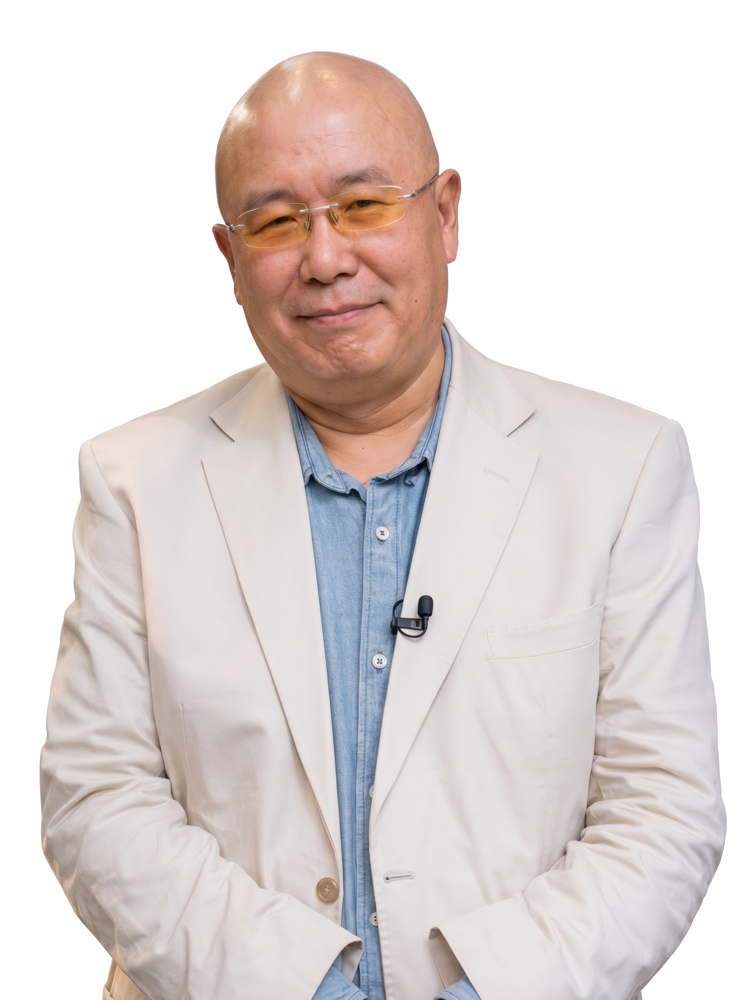

Maestro Zhen Qingchuan
El Maestro Zhen Qingchuan es un referente contemporáneo en la expansión del ZhiNeng QiGong hacia una comprensión más profunda de la conciencia y el Campo de Qi. Formado en el Centro Huaxia, ha dedicado su vida a investigar y transmitir el potencial del ser humano más allá de los límites de la percepción ordinaria.
El Maestro Zhen redefine la forma en que entendemos el ZhiNeng QiGong: no como una práctica, sino como una entrada directa al Campo. Ha desarrollado Psicología de las Percepciones Interiores (PIP), un enfoque que trasciende la mente y permite que el Qi original reorganice naturalmente la información del cuerpo y la conciencia.
Su enseñanza coloca el Cultivo del Corazón en el centro —no como idea, sino como estado— y profundiza el Nivel 1 (Peng Qi Guan Ding Fa) hacia la percepción del espacio, la coherencia interna y la experiencia de YiYuanTi. Su trabajo abre una vía clara: dejar de “hacer” para comenzar a percibir… y desde ahí, transformar.

Indira Plata
Instructora Internacional de ZhiNeng QiGong, Terapeuta de Polaridad y Creaneosacral y Consultora en Semiología de la Vida Cotidiana con más de 14 años de experiencia, Indira Plata ha desarrollado y potencializado sus habilidades y dones de sanación, a través de un revolucionario sistema de curación integrando tres disciplinas ancestrales: ZhiNeng QiGong, Terapia de Polaridad y Craneosacral, y el modelo educativo con enfoque terapéutico: Semiología de la Vida Cotidiana.
Ha acompañado a cientos de personas en su viaje hacia una vida más plena, armoniosa y saludable, recordando y activando el potencial sanador que cada individuo tiene. Indira cree profundamente en el poder de la energía y en la capacidad innata de cada persona para sanar y transformarse.
Con un enfoque holístico, compasivo y no invasivo, su trabajo está orientado a apoyar a sus pacientes y alumnos a recuperar su vitalidad alcanzando un estado de paz y equilibrio.